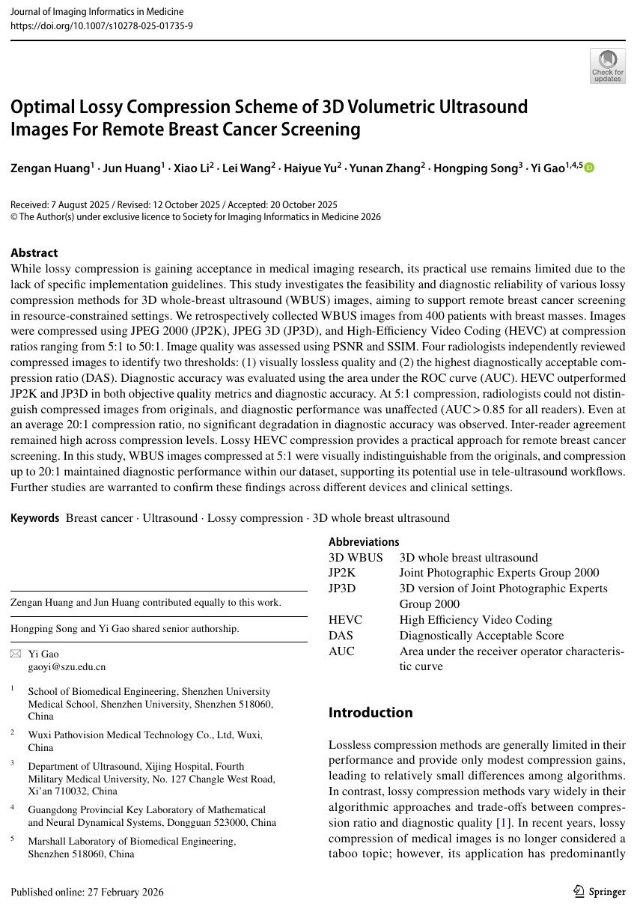
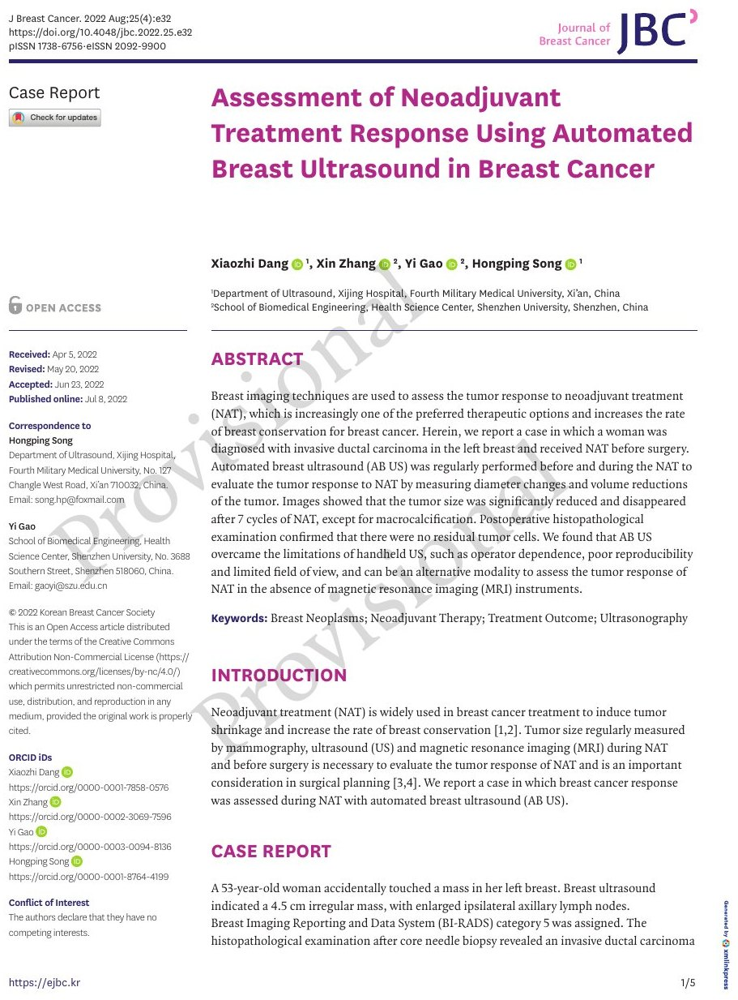
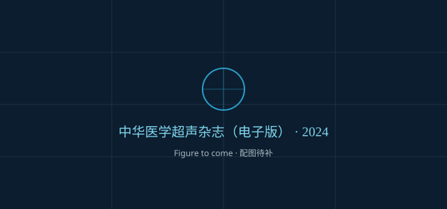
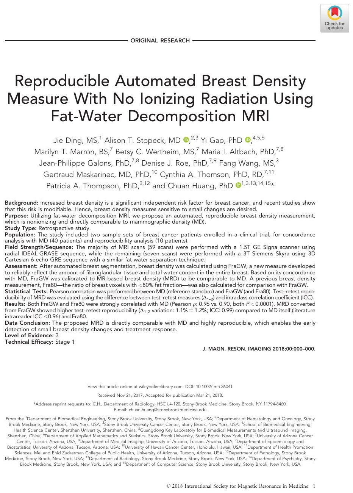
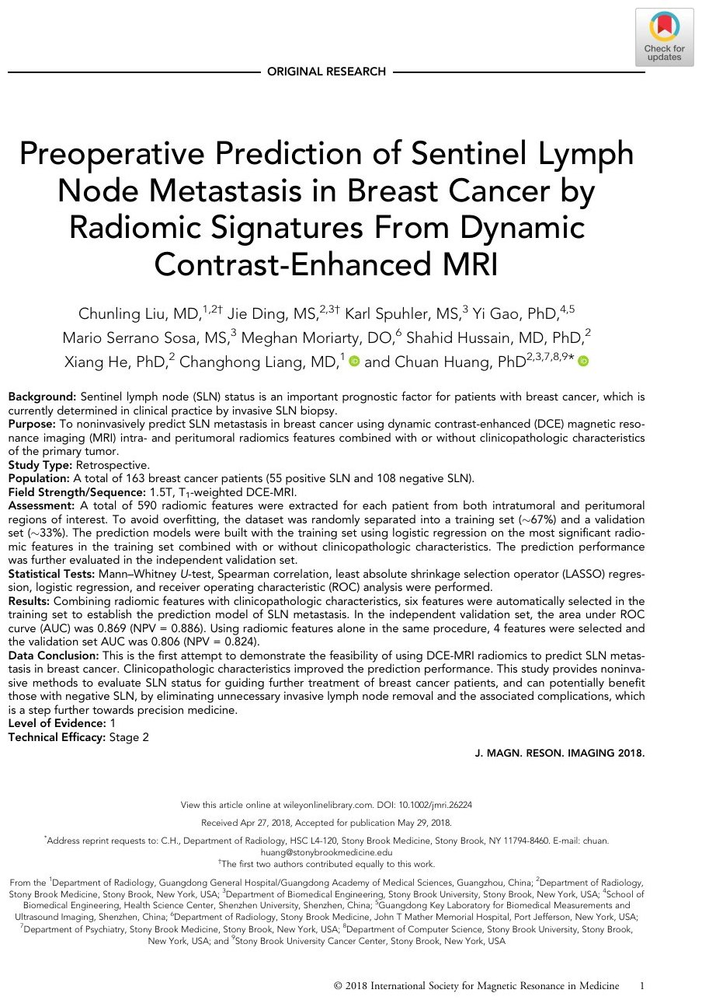

By Application · 01
Breast Cancer
From large-scale screening to molecular prediction: AI-assisted automated breast ultrasound (ABUS) deployed in 70+ medical institutions with more than 90,000 people screened, remote-reading screening models, MRI quantification, and China's first Class II certified 3D breast ultrasound image management software.
Overview
From large-scale screening to molecular prediction: AI-assisted automated breast ultrasound (ABUS) deployed in 70+ medical institutions with more than 90,000 people screened, remote-reading screening models, MRI quantification, and China's first Class II certified 3D breast ultrasound image management software.
- Bundled AI ABUS vs handheld ultrasound in organized screening (iScience 2026)
- Detection rate raised from 0.5‰ to 3.13‰ through AI-assisted screening
- Prospective remote-reading study across 46 community health centers
- Class II Medical Device Registration Certificate — first of its kind in China
10 · Selected work
Selected work
Each card: figure on top, key points below.

Bundled AI Supported Automated Breast Ultrasound versus Handheld Ultrasound in Organized Screening in China
iScience · 2026
- Bundled AI-supported ABUS versus handheld ultrasound in organized population screening.
- Real-world evidence from China's organized screening program.

人工智能辅助自动乳腺超声与手持超声在乳腺癌筛查中的效能比较（Comparison of AI-assisted automated breast ultrasound and handheld ultrasound in breast cancer screening）
Chinese Medical Journal（中华医学杂志） · 2025
- Head-to-head comparison of AI-assisted ABUS and handheld ultrasound in population breast cancer screening.
- Evidence base for ABUS-based screening programs, published in China's flagship medical journal.

Automated Breast Ultrasound With Remote Reading for Primary Breast Cancer Screening: A Prospective Study Involving 46 Community Health Centers in China
American Journal of Roentgenology · 2024
- Prospective study of remote-reading ABUS screening across 46 community health centers.
- Establishes a scalable primary screening model for community settings.

Optimal lossy compression scheme of 3D volumetric ultrasound images for remote breast cancer screening
Journal of Imaging Informatics in Medicine · 2026
- Determines the optimal lossy compression scheme for 3D volumetric ultrasound under remote-screening constraints.
- Enables practical tele-screening by cutting storage and transmission costs.

Explainable breast cancer molecular expression prediction using multi-task deep-learning based on 3D whole breast ultrasound
Insights into Imaging · 2024
- Explainable multi-task deep learning predicts molecular expression from 3D whole-breast ultrasound.
- Non-invasive indication of molecular phenotype to support treatment planning.

Assessment of Neoadjuvant Treatment Response Using Automated Breast Ultrasound in Breast Cancer
Journal of Breast Cancer · 2022
- ABUS-based assessment of neoadjuvant treatment response.
- Longitudinal volumetric imaging of tumor response.

基于自动乳腺超声远程阅片模式的乳腺癌筛查临床研究
中华肿瘤杂志 · 2024
- Clinical study of the remote-reading ABUS screening pathway.
- Real-world evidence from a Chinese screening population.

基于深度学习的乳腺超声应变弹性图像生成模型的应用研究
中华医学超声杂志（电子版） · 2024
- Deep-learning generative model for breast ultrasound strain elasticity images.
- Application study of generated elasticity images in clinical workflow.

Reproducible automated breast density measure with no ionizing radiation using fat-water decomposition MRI
Journal of Magnetic Resonance Imaging · 2018
- Fully automated, radiation-free breast density measurement from fat-water decomposition MRI.
- Emphasis on reproducibility for longitudinal screening.

Preoperative prediction of sentinel lymph node metastasis in breast cancer by radiomic signatures from dynamic contrast-enhanced MRI
Journal of Magnetic Resonance Imaging · 2019
- Radiomic signatures from DCE-MRI predict sentinel lymph node metastasis preoperatively.
- Recognized as J-MRI's most-cited original research paper of 2019–2020.